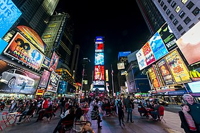

New York
New York is both a state and a city in the northeastern United States, with New York City being its largest metropolis and a global hub for finance, culture, and fashion. The state, admitted to the Union in 1788, is known for its diverse geography, including the Atlantic coast, the Great Lakes, and the Appalachian Mountains. Key landmarks in the city include the Statue of Liberty, Times Square, and Central Park, while the state is also the first capital of the United States, serving from 1785 to 1791
FUN FACT!
New York City was the first capital of the United States, and more than 800 languages are spoken there, making it the most linguistically diverse city in the world. The Statue of Liberty was a gift from France, and New York City has the most subway track in any city, with over 700 miles.
What To Visit in New york
Empire State Building
The Statue of Liberty, officially titled Liberty Enlightening the World, is a colossal neoclassical sculpture in New York Harbor that was a gift from France to the United States
Located At
350 Fifth Avenue, between West 33rd and 34th Streets in the Midtown South neighborhood of Manhattan, New York City
The address you provided, 350 Fifth Avenue between West 33rd and 34th Streets, is the location of the iconic Empire State Building in Manhattan's Midtown South neighborhood. This skyscraper was completed in 1931 and is one of the most famous buildings in the world.
Broadway
Broadway refers to both a street in New York City and the professional theatre district that is home to 41 professional theaters, which are considered the pinnacle of American commercial theater. Broadway is known for its large-scale musical and theatrical productions, and its shows are the highest level of commercial live theater in the English-speaking world, along with London's West End.
Central Park is bordered by Central Park North at 110th Street, Central Park South at 59th Street, Central Park West at Eighth Avenue, and Fifth Avenue on the east. The park is adjacent to the neighborhoods of Harlem to the north, Midtown Manhattan to the south, the Upper West Side to the west, and the Upper East Side to the east. It measures 2.5 miles (4.0 km) from north to south and 0.5 miles (0.80 km) from west to east.
Times Square
Times Square is a major commercial intersection, tourist destination, and entertainment hub in Midtown Manhattan, New York City, located at the junction of Broadway, Seventh Avenue, and 42nd Street. It is famous for its bright digital billboards, the annual New Year's Eve ball drop, and its status as the center of the Broadway Theater District. Known as "the Crossroads of the World," the area draws millions of visitors annually and is one of the world's busiest pedestrian intersections.
